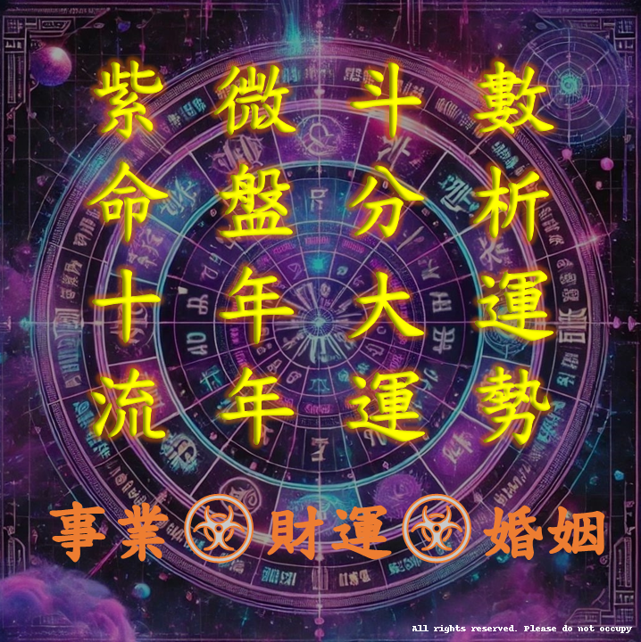

✦郭氏紫微✦
-
十年大運
，榮枯並行那麼你眼下身在
第幾年？
-
出身影響性格，性格左右
命運
但努力能
改寫未來
-
大運與流年相疊
好的更好，壞的更壞
大運重疊流年的威力其威力難以忽視！
-
今年理財
是賠是賺，絕對取決於你的運勢。
-
好壞日子
都有盡頭，你何時能
迎來轉運？
-
從
人格特質
洞悉你最適合的職業！
-
紫微運勢
有多準？再大的老闆也難逃低潮。
-
強運何時降臨？
唯有探尋
自化祿
方可窺見天機。
-
大運流年吉凶
且看
祿、權、科
忌落於何處。
-
厄運降臨雖難免
然其因由卻可
掌控。
-
這十年成敗，看你的大運
財帛宮。
